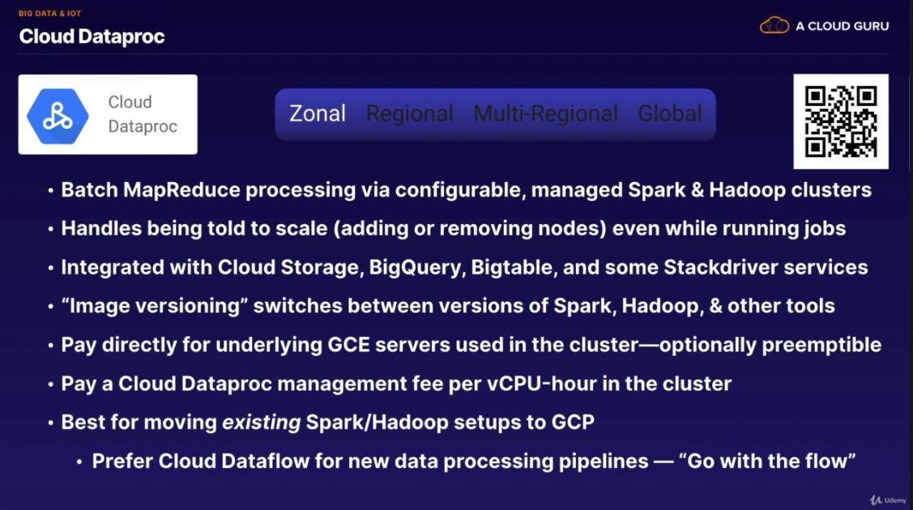

Google Cloud Notes
Based on Udemy Course Google Certified Associate Cloud Engineer Collection
1. Course Info
Course Introduction
- Getting certified on Cloud Platforms opens doors.
- In demand
- Contains what students need to pass exams and start utilizing the cloud in the real world.
- Kubernetes essential part of Google Cloud
- Deep Dive course available
- This course is a combination of:
- Google Certified Associate Cloud Engineer
- Introduction to Google Cloud Platform
- Kubernetes Deep Dive
Making Comparisons
- AWS seems to make new services for anything requested
- Google ACE is more broad, although similar.
- Focus on data flows here.
- ACE has more focus on running systems and command line access.
- PSA has more focus on business analysis and trade-offs
- Overall need to understand how things work at a fairly deep level and need to have built things hands on.
- Challenge labs to test your skills on your own.
- By end of course will have learned:
- Kubernetes
- How Google Cloud is set up and it's main services.
- How to use it through web console and command line.
Course Outline & Student Background
-
Aim to answer
- How do I properly set up my Google Cloud Platform (GCP) account and projects?
- How do I set up and use the various GCP services?
- How can I build a GCP system I have designed?
- How can I get certified as a GCP Associate Cloud Engineer?
-
Course Structure
- Certification/GCP Overview
- GCP Account Setup (Hands-On)
- GCP Services (Hands-On)
-
Breadth & Exam Prep
-
Prerequisities
- Certification Exam has no prerequisite
- Credit card for GCP account (will not be charged if stay in trial)
- Computer to connect to GCP and VMs
- MacOS, Windows, Linux, Chromebook, etc. are all fine.
- Mobile phone will not work.
-
Considerations
- Similar certification system to AWS
- Learn about mental models
- Learn how to learn more effectively
- No AWS experience required.
- Not for GCP
- Not for course
- Not for exam
2. Certification Intro
Exam Guide (Blueprint)
- Google's statement of what's most important
- To a person wanting to pass the exam
- To a person working in the field as a Cloud Engineer
-
Defines scope
- Of role
- Of exam
- Of course
An Associate Cloud Engineer deploys applications, monitors operations of multiple projects, and maintains enterprise solutions to ensure that they meet target performance metrics. This individual has experience working with public clouds and on-premises solutions. They are able to use Google Cloud Console and the command-line interface to perform common platform-based tasks to maintain one or more deployed solutions that leverage Google-managed or self-managed services on Google Cloud.
-
Exam Sections (or "Domains")
-
Setting up a cloud solution environment
- Setting up cloud projects and accounts
- Managing billing configuration
- Installing and configuring the command line interface (CLI)
- Planning and configuring a cloud solution
- Planning and estimating GCP product using the Pricing Calculator
- Planning and configuring compute resources
- Planning and configuring data storage options
- Planning and configuring network resource
- Deploying and implementing a cloud solution
- Deploying and implementing Compute Engine resources
- Deploying and implementing Kubernetes Engine resources
- Deploying and implementing App Enging and Cloud Functions resources
- Deploying and implementing data solutions
- Deploying and implementing networking resources.
- Ensuring successful operation of a cloud solution
- Managing Compute Engine resources
- Managing Kubernetes Engine resources
- Managing App Enging and Cloud Functions resources
- Managing data solutions
- Managing networking resources.
- Monitoring and logging
- Configuring access and security
- Managing Identity and Access Management (IAM)
- Managing service accounts
- Viewing audit logs for project and managed services
3. Intro to Google Cloud Platform (GCP)
GCP Context
- AWS is the far-and-away market leader
- What's the right cloud for you?
- Might use multiple
- Google is all about Big Data; huge scale
- Google's Tools
- "Google is such a developer-focused cloud"
- History of GCP
- Built by Googlers for Google
- Not original for Enterprise
- Purchased some services
- Leaks in abstractions more evident
- Catch-up to AWS
- Some functionality missing
- Avoided some mistakes
- More willing to be "a cloud" that you use, not just "the cloud" that you use.
GCP Design and Structure
- Global
- Secure
- Huge Scale
- Developers
Physical Infastructure
- vCPU
- Physical server
- Rack
- Data center (building)
- Zone
- Region
- Multi-Region
- Private global network
Network Ingress and Egress
- Normal network: Routes via Internet to edge location closest to destination
- Google: Routes so traffic enters from Internet at edge closest to source
- Enables very interesting scenarios
- Single global IP address can load balance worldwide
- Sidesteps many DNS issues
- Can now opt for "normal" network routing to reduce price (and functionality)
Pricing
- Provisioned
- "Make sure you're ready to handle X"
- Usage
- "Handle whatever I use and carge me for that"
- Network traffic
- Free on the way in (ingress)
- Charged on the way out (egress), by GBs used
- Egress to GCP services sometimes free
- Depends on the destination service
- Depends on the location of that service
Security
- Separation of duties and physical security
- Absolutely everything always encrypted at rest
- Strong key and identity management
- Network encryption
- All control info encrypted
- All WAN traffic to be encrypted automatically
- Moving towards encrypting all local traffic within data centers
- Distrust the network, anyway
- BeyondCorp
- Google Security Design
Scale and Automation
- Scale must be unbounded
- Devs don't want to answer pages
Resource Quotas (Soft Limits)
- Scope
- Regional
- Global
- Changes
- Automatic
- By request
- Response in 24-48h
- May be refused
- Queryable
gcloud compute project-info describe --project myprojectid
Organizations
- Projects are similar to AWS accounts
- Projects own resources
- Resources can be shared with other projects
- Projects can be grouped and controlled in a hierarchy
4. Intro to GCP Products/Services
How to Cheat

Products/Services as Building Blocks
- Categories
- Data flow
- Compute, Storage, Networking centrally important
Cloud Deployment Manager
- All pieces needed included in template
- Can customize
GCP Marketplace
- aka Cloud Launcher
- A partner and open-source marketplace
- Buying completed things
Key Building Blocks
- Compute Engine
- Most relatable Google cloud product
- Like computers from the store
- Spin up and use, as much as needed
- Build almost anything with it
- By the second
- Most relatable Google cloud product
- Cloud function
- Key building block of serverless systems
- By the 10th of a second
- Many event types
- Cloud storage
- Serverless product
- Most pure product
- Storage and Serving
- Nearline & Coldline are variants of cloud storage
- Persistent Disk
- Block storage, similar to harddrive
- Only goes with compute engine.
- Cloud Filestore
- Neither object based nor block based
- File based
- Kubernetes Engine
- Alleviate management burden with Compute Engine
- Load Balancers
- Cloud TPU
- Specialized hardware for machine learning
- TensorFlow processing
- Many ML products
- AutoML, etc
- Data and Analytics Products
- Networking
- Virutal private cloud
- Dedicated Interconnect
- Cloud NAT
- Cloud load balancing
- Cloud DNS
- etc
- Management Tools
- Stackdriver
- Identity and Security Products
- Cloud Identity
- Cloud IAM
6. Account Setup
Free-Tier GCP Accounts
- Google Cloud Platform Free Tier
- Billing account that does not get charged
- Must be manually upgraded to a paying account
- Still requires credit card, for verification
- $300 USD credit that can last 12 months
- "When your trial ends, your account will be paused and you'll have the option to upgrade to a paid account."
- Billing account that does not get charged
- Business Accounts not eligible for free trial
- Free Trial Restrictions
- No more than 8 vCPUs (total simultaneous)
- No GPUs (video card chips)
- No TPUs (custom chips for TensorFlow)
- No Quota increases
- No cryptomining allowed
- No SLAs
- No premium OS licenses (e.g. Windows)
- No Cloud Launcher products with extra usage fees
- Always Free
- "Always Free usage does not count against your free trial credits"
- Last beyond end of free trial
- Full details at Free Tier Limits
- Compute Highlights
- 24h/day of f1-micro runtime, in most US regions, only
- 28h/day of App Engine runtime, in North America
- 2M/month of Cloud Functions invocations (with runtime/size limits)
- Storage Highlights
- Storage averaged over the month
- 5 GB of Regional Cloud Storage, including some operations
- 1 GB of Cloud Datastore storage, including some operations
- 10 GB of BigQuery storage, with 1 TB/month of query processing
- 30 GB HDD Storage on GCE and AE
- 5 GB snapshot storage on GCE and AE
- 5 GB of StackDriver logs with 7 day retention
- Networking Highlights
- Egress to China and Australia not free!
- 1 GB/month of App Engine data egress
- 1 GB/month of Compute Engine data egress
- 5 GB/month of egress by Cloud Function invocations
- 5 GB/month of egress from Cloud Storage based in North America
- 10 GB/month of Cloud PubSub messages
- Other highlights
- 120 build-minutes/day of Google Cloud Container Builder
- 60 minutes/month of Google Cloud Speech API recognition from audio/video
- 1000 units/month of Cloud Vision API calls
- 5000 units/month of Google Cloud Natural Language API
- Google Cloud Shell with 5 GB of persistent disk storage quota
- 1 GB of Google Cloud Source Repositories private hosting
Create Free-Tier GCP Account
- Create Free Trial GCP account
- New GMail account for Billing
- Principle of least privilege
- Signup
Explore GCP Console
- The Google Cloud Platform Console
- Google Cloud Status Dashboard
- Fully customizable dashboard
- Activity tab
- Google Cloud Shell
- Do NOT click activate full account
Set Up Billing Export
- Export Cloud Billing Data to BigQuery
- Setting up Billing Export
- Navigate to Console > Billing > Billing Export
- Need a BigQuery Dataset
- Could do from here, but then it will live inside that particular project, which isn't where we want it. Don't want all stuff mashed together.
- Use projects to manage groups of resources
- Create new project
- Quotas
- Projects aren't an infinite resource
- Create a new project here, unique ID across all projects
- Quotas
- Create new Dataset in BigQuery under new project
- Set up a label
- Set up BigQuery export
- Admin project
- billing_export dataset
- Recap
- Export must be set up per billing account
- Resources should be placed into appropriate projects
- Resources should be tagged with labels
- Billing export is not real-time
- Delay is hours
Set up Billing Alert
- Can setup a "budget" with alerts
- Billing > Budget & alerts > Create Budget
- Trigger alerts for $1, include credits
Set Up (Non-Admin) User Access
- Limit risk by restricting user account, as opposed to constantly using admin account
- Key in this case is user account will not be able to upgrade the billing account to become a paying one.
- Production setup may have even more restrictive roles
- Billing IAM
- Role: Billing Account User
- Purpose: Link projects to billing accounts
- Level: Organization or billing account
- Use Case: This role has very restricted permissions, so you can grant it broadly, typically in combination with Project Creator. These two roles allow a user to create new projects linked to the billing account on which the role is granted.
- Add Billing Account User (different than admin account)
- Login and access Billing with newly granted User account
- Permissions limited here due to role
- User has access to that User Project created
- Admin account does not have access to newly created User Project
- Overview of Billing Access
- Owning a project and being able to control its resources is completely separate from being able to control the Billing Account attached to that project.
7. Cloud Shell and Data Flows
Explore Cloud Shell and Editor
Cloud Shell Docs Course Resources on Github
-
Shell Highlights
- Web browser access
- No need for local terminal
- Chromebook (+)
- No PuTTY!
- Automatic SSH key management
- No need for local terminal
- 5 GB of persistent storage
- Easy-access to preinstalled tools
- gcloud, bq, kubectl, docker, npm/node, pip/python, ruby, vim, emacs, bash, etc.
- Web browser access
-
Lab walkthrough
- Log into GCP account with non-admin account
- Make sure 2FA is enabled and you are prompted for it.
- Enable Cloud Shell
- Switch projects:
gcloud config set project [PROJECT_ID] - Download file:
dl README-cloudshell.txt node hello.jswith git repo for cloud test- Can view with Web Preview
- Can view and edit files in cloud editor
- nodemon preinstalled here
diff hello.js html-hello.js- Can change preview port
- Switch projects:
- Log into GCP account with non-admin account
Data Flows
- Data Flows are Everything (in IT)
- Core Concepts with regard to DATA
- Moving - Network, etc
- Processing - Compute, etc
- Remembering - Storage, etc
- Cloud Shell Lab Data Flow
- Your Machine
- Web Browser
- GCP Console
- Google Cloud Control Plane
- Opening up Cloud Shell
- Find persistent storage available
- Find machine to host our cloud shell instance
- Container
- Secure Shell Server
- Connection to this secure shell from browser
- Connect to git, download files, stored in persistent storage.
- Running Node Server
- Google cloud sets up proxy
- Container
- Opening up Editor
- Make changes to files in persistent storage
- Node process has to be reset to show any changes.
- Reload browser
- Loading alternative node process with different port also requires us to change proxy port to match.
- GCP Console
- Web Browser
- Your Machine
- Key Takeaways
- Data flows are the foundation of every system
- Moving, Processing, Remembering
- Not just Network, Compute, Storage
- Build mental models
- Helps you make predictions
- Identify and think through data flows
- Higlights potential issues
- Requirements and options not always clear
- Especially in the real world.
- Critical skills for both real world and exam questions
Update Course Lab Files
- What's the plan?
- Configure git
- Stash changes
- Retrieve Updates
- Starting off
- Log into GCP console with user account
- Open Cloud Shell
- (Doesn't matter which project you use)
chmod +x update.sh./update.sh
Milestone: Open World
- Two quotas to be aware of:
- Each user account has a qutoa on how many projects you can own
- Trial billing account has a separate quota for how many projects can be linked to it
- Google automatically creates a project for you admin account and links it to your trial billing account
8. Basic Services
GCS: Google Cloud Storage
- Log into GCP Console with user account
- From now on, just assume this
- Only use admin account when we need it
- Create a new project
- Generally, new thing, new project
- Also link to billing
- Navigate to Storage in navigation list
- Can pin to top
- Create a Bucket
- Set up region/multi-region, labels, keys
- Edit permissions to set up public access to file.
- User - "allUsers" - Reader
- Objects not files
- Command line alternative methods for actions
- Example rename an object:
gsutil mv -p gs://storage-lab-console-panda/README-cloudshell.txt gs://storage-lab-console-panda/README-cloudshell.txt
- Example rename an object:
- Cannot change location or location-type after bucket creation
- Can edit bucket permissions
- Add allUsers as Storage Object Viewer to essentially create a public bucket, which, for security reasons, is not advised
GCS via gsutil in Command Line
gcloud config list- Using
gsutil- Buckets start with
gs:// gsutil ls gs://storage-lab-console-panda/- Add
**for all
- Add
- Can use
--help gsutil mb(mb = make bucket)- Ex:
gsutil -l NORTHAMERICA-NORTHEAST1 gs://storage-lab-cli-panda
- Ex:
gsutil label get gs://storage-lab-console-panda- Returns JSON listing labels
gsutil label set gs://storage-lab-cli-pandagsutil label ch -l "extralabel:extravalue" gs://storage-lab-cli-pandagsutil versioning get gs://storage-lab-cli-pandagsutil versioning set on gs://storage-lab-cli-pandagsutil cp README.txt gs://storage-lab-cli-pandagsutil cp -a README.txt gs://storage-lab-cli-panda- Getting version
- Between buckets:
gsutil cp gs://storage-lab-console-panda/** gs://storage-lab-cli-panda/- Can't see or utilize versioning in web UI
gsutil acl ch -u AllUsers:R gs://storage-lab-cli-panda/Selfie.jpg
- Can't see or utilize versioning in web UI
- Buckets start with
- Lab Script Commands
- Bucket Locations
Starting Our First GCE VM: Google Compute Engine Setup
- Find which project is selected:
gcloud config get-value project - Check if any Compute Engines already running:
gcloud compute instances list - List Services:
gcloud services list- Can add
--helpor-h, like most commands - List of APIs that are enabled for this specific project
- Can add
gcloud services list --enabled- Defaultgcloud services list --available- All- Filter down with grep:
gcloud services list --available | grep compute- Result =
compute.googleapis.com Compute Engine API
- Result =
- Filter down with grep:
gcloud services -hgcloud compute instances list- URL given after sending N: API & Services
- Google API section of console
- URL given after sending N: API & Services
- Navigate to IAM & admin section
- See members and roles here
- Service Accounts Section
- Currently empty
- Navigate to Compute Engine section
- Simply going here will enable it
- After, running
gcloud compute instances listwill now showListed 0 items
- compute.googleapis.com (Compute Engine API) & oslogin.googleapis.com (Cloud OS Login API) is now in services list
- Permissions also added automatically in IAM
- Service account also created automatically
- To create our very first virtual machine:
gcloud compute instances create myvmgcloud compute instances delete myvm
- Lab Script Commands
Rundown on gcloud
- The
gcloudcommand - Overview
- Overview Doc for gcloud
- Command-line tool to interact with GCP
- Best friends with
gsutilandbq- All share same configuration set via
gcloud config gsutilcould have beengcloud storagebqcould have beengcloud bigquery
- All share same configuration set via
- In general: more powerful than console but less powerful than REST API
- Functionality in command-line tools not yet fully released, can use
betato use:gcloud beta billing accounts list
- Functionality in command-line tools not yet fully released, can use
- Syntax:
- Syntax of gcloud
gcloud <global flags> <service/product> <group/area> <command> <flags> <parameters>- Always drills down (from left to right)
- Examples:
gcloud --project myprojid compute instances listORgcloud --project=myprojid myprojid compute instances list
- In our example, relied on project given in config.
- We used:
gcloud compute instances create myvm(no project name given)
- We used:
- Not all commands have parameters:
gcloud services list --available
gsutil ls- Implies working against google cloud storage service and the command is to list- Command to make bucket:
gsutil mb -l northamerica-northeast1 gs://storage-lab-cli-panda - Global flags
--help-h--project <ProjectID>--acount <Account>--filter- Not always available, but often better than using grep
--format- Can choose JSON, YAML, CSV, etc.
- Can pipe (
|) JSON tojqcommand for further processing
--quiet(or-q)- Won't prompt you to confirm about destructive actions
- Config Properties
- Properties in gcloud
- Values entered once and used by any command that needs them
- Can be overridden on a specific command with corresponding flag
- Used very often for account, project, region, and zone
- Set
core/accountoraccountto replace--account - Set
core/projectorprojectto replace--project - Set
compute/regionto replace--region - Set
compute/zoneto replace--zone
- Set
- Set with
gcloud config set <property> <value> - Check with
gcloud config get-value <property> - Clear with
gcloud config unset <property>
- Configurations
- Configuration in gcloud
- Can maintain groups of settings and switch between them
- Most useful when using multiple projects
- Interactive workflow to set common properties in a config with
gcloud init - List all properties in a configuration with
gcloud config list - List all configurations with
gcloud config configurations list- IS_ACTIVE column shows which one is currently being used
- Other columns list account, project, region, zone, and the name of the config
- Make new config with
gcloud config configurations create ITS_NAME - Start using config with
gcloud config configurations activate ITS_NAME- Or use for just one command with
--configuration=ITS_NAME
- Or use for just one command with
Configurations Analogy
| Action | Directory | Configuration |
|---|---|---|
| Make New | mkdir newdir |
gcloud config configurations create newconfig |
| Switch To | cd newdir |
gcloud config configurations activate newconfig |
| List Contents | ls |
gcloud config list |
| List Non-Active | ls ~/newdir |
gcloud --configuration=newconfig config list OR gcloud config configurations describe newconfig |
GCE In and Out
How you can connect into and out of a Google Compute Engine instance
- Good first step to check and set project we're in
- Set:
gcloud config set project [PROJECT_ID]
- Check:
gcloud config list
- Set:
- Check for hidden ssh folder in home directory
pwdlsls -a .ssh
- Quick look at the Cloud Shell machine itself
whoamihostnamecurl api.ipify.org
- Check that nothing is running
gcloud compute instances list
- Don't create default VM:
gcloud compute instances create myhappyvm- Enter no, cancel
- Look at how to set the machine type
gcloud compute instances create myhappyvm -hgcloud compute instances create myhappyvm --helpgcloud compute machine-types list- Filter:
gcloud topic filtersgcloud compute machine-types list --filter="NAME:f1-micro"gcloud compute machine-types list --filter="NAME:f1-micro AND ZONE~us-west"
- Set default zone & region:
gcloud config set compute/zone us-west2-bgcloud config set compute/region us-west2
- Creating the instance:
gcloud compute instances create --machine-type=f1-micro myhappyvm
- Ping the VM:
- By name:
ping -c 3 myhappyvm- Doesn't recognize "myhappyvm"
- By internal IP
ping -c 3 10.168.0.2- Also doesn't work.
- By external IP
ping -c 3 34.94.94.230- Pinging external IP works here
- By name:
- Connect with SSH:
ssh 34.94.94.230- Permission denied
- Use
gcloud compute ssh myhappyvm- Will prompt to set up SSH key if not setup already
- Now connected to VM
whoamiSame resulthostnameDifferent hostname
- SSH folder in cloudshell now has keys for compute VM
- SSH folder in VM now has key as well
- Metadata logged when
gcloud compute sshwas first running - Attempt to curl the metadata:
curl metadata.google.internal./computeMetadata/v1/- Missing Metadata-Flavor:Google header
curl -H "Metadata-Flavor:Google" metadata.google.internal./computeMetadata/v1/curl -H "Metadata-Flavor:Google" metadata.google.internal./computeMetadata/v1/projects/- A look at project-id we see the id of our current project
- In attributes we see ssh keys
- Includes the public key
- Can get instance/name and other useful information here
- Including service-accounts/default/
- Has aliases, email, identity, scopes, and token
- Token to sign API requests
- Also using service account auto created when we enabled compute engine API
- gcloud automatically has a way to connect out from this instance to the rest of the google cloud platform
- Has aliases, email, identity, scopes, and token
- Including service-accounts/default/
- Also connected to our project
- Can see buckets we created from this VM
- Attempt delete VM:
gcloud compute instances delete myhappyvm- From within VM:
- Permission failed
- From cloudshell:
- Successful
- Check if deleted:
gcloud compute instances listListed 0 itemsexpected
GCE via Console
- Navigate to Compute Engine Service
- Settings
- Can set default region/zone here
- Console and command-line config informaton & settings are separate
- Metadata
- SSH keys
- Key from previous is registered.
- SSH keys
- VM instances
- Create
- Custom machine config, etc
- Can scope to service account or none
- In addition to access scopes
- Create
- Once created, can edit some parts of the VM
- Cannot change the name
- By default does not preserve instances on deletion
- Can use "Create Similar" as shortcut to create similarly configured VM
- Settings
- Can make preemtiple from management setting
- Setting on will also switch off automatic restart and will terminate on host maintainence
- Making preemtible will make Google do what it can to keep running
- Will shut down after 24 hours
- Automation
- Startup script runs automatically when instance starts
- Whether first time or on a reboot
- Gets passed to instance as metadata
- The machines are designed to run script on boot
- Variety of uses
- Security tab
- Can override project level settings about SSH keys and block them from being used and add custom ones just for this instance
- Disks
- Default behavior is to delete boot disk when instance is deleted
- Can add a new one or attach an existing persistent disk
- Encryption options
- Google-managed easy preferred route
- Default behavior is to delete boot disk when instance is deleted
- Startup script runs automatically when instance starts
- Can connect via SSH with button in UI via VM instances
- Can delete from within the VM here since we changed scopes to allow access to Google compute engine through that service account
- In all activity, most logged activities happening as user account
- Other most recent two come from the service account that was used by the compute engine instance
- In metadata>SSH keys, two new keys were added as a part of the connection from the console to the instance
- Temporary keys
9. Basic Services Challenge Lab
GCE-GCS Challenge Lab
- Desired Result (Requirements)
- Brand new project
- GCE instance that runs provided script
- System logs available in Stackdriver Logs
- New GCS bucket for resulting log files
- Log file appears in new bucket after instance finishes starting up
- No need to SSH to instance
- Tips
- No need to SSH
- But you can do so for debugging, if you want
- Final instance should not need any manual control via SSH
- You should not need to change the startup script
- But you must read it for key info to complete the lab
- Use the "Create Similar" button to try again
- Clean up after yourself
- Delete or Stop instances
- No need to SSH
- Advanced Challenge: No Console
- Repeat the whole lab from scratch using only the CLI in Cloud Shell
- Complete this Challenge Lab through the console UI, first
- Tip: You can use info from the UI-based project to craft your command lines
- Can you script everything?
- Even creating the new project?
GCE-GCS Challenge Lab Data Flow
Service Accounts (incl. scope)
Long-polling for Metadata Changes
Lost of Logs Sent by Agent (by Default)
- Our Actions
- Retrieve and review startup script
- Make new project
- Make logs destination bucket
- Enable GCE API
- Create new GCE instance
- Enable scope to write to GCS
- Set labels (optional)
- Set startup script
- Set metadta to point to logs destination bucket
- Monitor progress
- Check Stackdriver Logs
- Check CPU graph
- Check logs bucket
Data Flow in Action

GCE-GCS Challenge Lab Demo
- Demo walkthrough
- Create new project
- Also must link to billing
- Fetch provided bash script
- Create new Storage bucket
- Enable Compute Engine
- Set to run the bash script on startup
- Navigate to stackdriver logs for compute instance
- See file downloaded in bucket storage
- Create new project
Basic Services Sample Practice Questions Breakdown
- Understand
- Eliminate
- Evaluate
- Choose
- Validate
10. Scaling
Managed Instance Groups
- Challenge Lab GCE as active Project
- Compute Engine
- Create instance template
- Instance Templates
- Not required to set a zone
- Pick f1 micro machine
- Put in startup script
- Give metadata key name pair, with
gs://PROJECT_ID/as value
- Give metadata key name pair, with
- Instance templates are immutable
- Can't be edited
- Can copy, however
- Create VM with template (x2)
- Create Instance Group
- Instance Groups
- Unmanaged Instance Group
- Groups instances, monitoring, etc
- Manual management
- Managed Instance Group
- Google will be creating and deleting instances on our behalf.
- Autoscaling
- Deleting a managed instance group will delete all of its instances because it owns them.
- Deleting an unmanaged instance group will just leave them all behind.
- Create instance template
- Compute Engine
Milestone: Robust Mental Model
11. Security
What is Security? (Data Flow)
- CIA Triad:
- You cannot view data you shouldn't: Confidentiality
- You cannot change data you shouldn't: Integrity
- You can access data you should: Availability
- How do we control data flow? (AAA)
- Authentication - Who are you?
- Authorization - What are you allowed to you?
- Accounting - What did you do?
- Key Security Mindset (Principles)
- Least privilege
- Defense in depth
- Fail securely
- Key Security Products/Features - AuthN
- Identity
- Humans in G Suite, Cloud Identity
- Applications and services use Service Accounts
- Identity hierarchy
- Google groups
- Can use Google Cloud Directory Sync (GCDS) to pull from LDAP (no push)
- Identity
IAM Breakdown: Resource Hierarchy (To which thing?)
- Resource
- Something you create in GCP
- Project
IAM Breakdown: Permissions and Roles (Can do what?)
Service.Resource.Verb- Examples:
pubsub.subscriptions.consumepubsub.topics.publish
- Roles
- A Role is a collection of Permissions to use or manage GCP Resources
- Primitive Roles - Project-level and often too broad
- Viewer is read-only
- Editor can view and change things
- Owner can also control access & billing
- Predefined Roles - Give granular access to specific GCP Resources
- E.g.:
roles/bigquery.dataEditorm roles/pubsub.subscriber
- E.g.:
IAM Breakdown: Members and Groups (Who?)
-
Members
- A Member is some Google-known identity
- Each Member is identified by a unique email address
- Can be:
user: Specific Google account- G Suite, Cloud Identity, Gmail, or validated email
serviceAccount: Service Account for apps/servicesgroup: Google group of users and service accountsdomain: Whole domain managed by G Suite or Cloud IdentityallAuthenticatedUsers- Any Google account or service accountallUsers- Anyone on the internet (public)
-
Groups
- "A Google group is a named collection of Google accounts and service accounts."
- "Every group has a unique email that is associated with the group."
- You never act as the group.
- But membership in a group can grant capabilities to individuals.
- Use them for everything!
- Can be used for owner when within an organization
- Can nest groups in an organization
- Example: One group for each department, all those in group for all staff.
IAM Breakdown: Policies (Bindings)
- Policies
- A policy binds Members to Roles for some scope of Resources
- Answers: Who can do what to which things?
- Attached to some level in the Resource Hierarchy
- Organization, Folder, Project, Resource
- Roles and Members listed in policy, but Resources identified by attachment
- Always additive ("Allow") and never subtractive (no "Deny")
- "Child policies cannot restrict access granted at a higher level."
Granting, Changing, Revoking Access
- One policy per resource
- Max 1500 member bindings per policy
- Ridiculously High Max
- Anywhere close and "You're doing it wrong!"
- Use groups instead!
Docs for gcloud add iam policy
IAM Wrap-up
Billing Access Control
- Billing Accounts
- Represents some way to pay for GCP Service Usage
- Type of Resource that lives outside of Projects
- Can belong to an Organization (i.e. be owned by it)
- Inherits Org-level IAM policies
- Can be linked to projects
- But does not own them
- No impact on project IAM
- But does not own them
Billing IAM Roles
Overview of Billing Access Control
| Role | Purpose | Scope |
|---|---|---|
| Billing Account Creator | Create new self-serve billing accounts. | Org |
| Billing Account Administrator | Manage billing accounts (but not create them). | Billing Account |
| Billing Account User | Link projects to billing accounts. | Billing Account |
| Billing Account Viewer | View Billing accoun tcost information and transactions | Billing Account |
| Project Billing Manager | Link/unlink the project to/from a billing account. | Project |
-
Monthly Invoiced Billing
- Invoiced Billing
- Get billed monthly and pay by invoice due date.
- Can pay via check or wire transfer
- Can increase project and quota limits
- Billing administrator of org's current billing account contacts Cloud Billing Support
- To determine eligibility
- To apply to switch to monthly invoicing
- Eligibility depends on
- Account age
- Typical monthly spend
- Country
-
SMB Centralized
- Scenario: Small-to-medium enterprise:
| User type | Billing activities | Billing Cloud IAM roles |
|---|---|---|
| CEO | Manage payment instrument; View and approve invoices. | Billing Account Administrator |
| CTO | Set budget alerts; View Spend; Create new billable projects | Billing Account Administrator;Project Creator. |
| Development teams | None | None |
- SMB Delegated
- Scenario: Small-to-medium enterprise with preference for delegated authority
| User type | Billing activities | Billing Cloud IAM roles |
|---|---|---|
| CEO | Manage payment instrument; Delegate authority | Billing Account Administrator |
| CFO | Set budget alerts; View spend | Billing Account Administrator |
| Accounts Payable | View and approve invoices | Billing Account Viewer |
| Development teams | Create new billable projects | Billing Account User; Project Creator |
12. Networking
Routing Overview
- Routing
- Focus on
- About Software-Defined Networking (SDN)
- More-general than the OSI 7-layer model of networking
- Not about any particular routing scheme
- Only setting the stage for routing tables / routes
- What is it?
- Routing is about deciding where data should go next
- Like a direction marker on a hiking trail
- Fork in the trail
- At the peak
- Many local decisions - No full map or path
- Where does it happen?
- On the way to Google's network
- On the way to the right resource
- On the way from one resource to another
- There and back again
- Focus on
Routing: To Google's Network
- Getting data to Google's network
Premium Routing Tier Blog Post
Hot-Potato and Cold-Potato Routing
Routing: To the Right Resource (Load Balancing)
- Getting Data to the right resource
- Latency reduction
- Uses servers physically close to clients
- Cross-Region Load Balancing (with Global Anycast IPs)
- Load balancing
- Separate from auto-scaling
- Cloud Load Balancer (all types; internal and external)
- System design
- Different servers may handle different parts of the system
- Especiailly when using microservices (instead of a monolith)
- HTTP(S) Load Balancer
- (with URL Map)
- Latency reduction
- Unicast vs Anycast
- Unicast
- There is only one unique device in the world than can handle this; send it there.
- Anycast
- There are multiple devices that could handle this; send it to any one- but ideally the closest.
- Unicast
- Layer 4 vs. Layer 7
- TCP (of TCP/IP) is usually called Layer 4 (L4)
- It works solely with IP addresses
- HTTP and HTTPS work at Layer 7 (L7)
- These know about URLs and paths
- Each layer is built on the one below it
- Therefore:
- To route based on URL paths, routing needs to understand L7
- L4 cannot route based on the URL paths defined in L7
- TCP (of TCP/IP) is usually called Layer 4 (L4)
- What about DNS?
- Name resolution (via the Domain Name System) can be the first step in routing.
- But that comes with a number of problems:
- Layer 4 - Cannot route L4 based on L7's URL paths
- Chunky - DNS queries often cached and reused for huge client sets
- Sticky - DNS lookup "locks on" and refreshing per request has a high cost.
- Extra latency because each request includes another round-trip
- More money for additional DNS request processing
- Not Robust - Relies on the client always doing the right thing.
- Spoiler: They don't
Routing: Among Resources (VPC)
Getting data from one resource to another
- VPC (global) is Virtual Private Cloud - Your private SDN space in GCP
- Not just resource-to-resource - Also manages the doors to outside & peers.
- Subnets (regional) create logical spaces to contain resources
- All Subnets can reach all others - globally, without any need fro VPNs.
- Routes (global) define "next hop" for traffic based on destination IP
- Routes are global and apply by Instance-level Tags, not by Subnet
- No route to the internet gateway means no such data can flow
- Firewall Rules (global) further filter data flow that would otherwise route
- All Firewall Rules are global and apply by Instance-level Tags or Service Acct.
- Default Firewall Rules are restrictive inbound and permissive outbound
Classless Inter-Domain Routing
IPs and CIDRs
- IP address is
abc.def.ghi.jkl(dotted quad) where each piece is 0-255 - CIDR block is group of IP addresses specified in
<IP>/xynotation- Turn IP address into 32-bit binary number
- e.q.
10.10.0.254->00001010 00001010 00000000 11111110
- e.q.
/xyin CIDR notation locks highest (leftmost) bits in IP address (0-32)abc.def.ghi.jkl/32is single IP address because all 32 bits are lockedabc.def.ghi.jkl/24is 256 IP address because last 8 bits (jkl) can vary0.0.0.0/0means "any IP address" because no bits are locked
- Turn IP address into 32-bit binary number
- RFC1918 defines private (i.e. non-Internet) address ranges you can use:
10.0.0.0/8,172.16.0.0/12, and192.168.0.0/16
Creating Auto-Mode VPCs (Lab)
- VPC Networks > Create VPC Network
- Set Subnet Creation Mode to Automatic
- Enable default firewall rules (all available)
- Create
Custom-Mode VPCs (Lab)
Creating the VPC
- Create custom VPC
Creating the Custom IAM Role & Service Account
Understanding IAM Custom Roles
Creating and Managing Custom Roles
Creating and enabling service accounts for instances
- Create custom IAM Role with monitoring and logging roles
- Delete default service account & create new with new custom IAM role
Using the VPC and Configuring Firewall Rules
Filtering by Service Accounts vs Network tag
Updated Managed Instance Groups
Having trouble editing the instance in Group
- Compute Engine > Instance Template
frontend-it- Set to f1-micro machine type
- Set service account to
frontend-safrom earlier - Set Networking in advanced settings
- Network:
app-vpc - Subnet:
oregon-subnet
- Network:
- Compute Engine > Instance Template
frontend-ig- Min 2, Max 3
- Attempt to ping, can't
- VPC Network
app-vpc> Firewall Rules- Add firewall rule
- Direction: Ingress
- Action on match: Allow
- Target >
frontend-sa(service account)
- Add firewall rule
13. GKE Introduction: Google Kubernetes Engine
- What a cluster is
- How to manage
Kubernetes Deep Dive Intro
Kubernetes
- On prem AND on cloud
- Great cloud on/off ramp
14. Kubernetes Course Introduction
What You Need
- A Kubernetes cluster
- Several Options:
- Minikube
- Docker for Desktop
- AKS (hosted)
- EKS (hosted)
- GKE (hosted)
- Kops
- Kubeadm (on-premises)
- Play with Kubernetes (PWK)
- Several Options:
Schedule
- Kubernetes Big Picture
- Kubernetes App Architecture
- Kubernetes Networking
- Kubernetes Storage
- From Code to Kubernetes
- Kubernetes Deployments
- Scaling Kubernetes Apps
- RBAC and Admission Control
- Other Kubernetes Stuff
- What Next
15. Kubernetes Big Picture
Kubernetes Primer
- Open source platform for running cloud native apps
- Infastructure (on-premises/cloud)
- Kubernetes on top of it to run your apps on
- Layer that sits about the VMs and provides a rich API and extensive set of primitives for running cloud native apps.
- Cloud-native app?
- Built from lots of small interacting services that come together
- This makes them easy to scale
- Kubernetes is platform of choice for running these
- Built from lots of small interacting services that come together
- Kubernetes cluster made up of a bunch of Linux nodes (vm or cloud instances)
- Some form the control plane
- Brain of the cluster
- Others are worker nodes
- Where the apps run
- Some form the control plane
- Persistent Store - etcd
- Only stateful bit
- Protip
- Business critical, big cluster:
- etcd, potentially biggest issue
- Distributed databases not scaling very well
- etcd, potentially biggest issue
- Business critical, big cluster:
- API Server is gateway into the cluster
- Control plane -> Nodes
- Lots of Security around it
Kubernetes API
- Where everything in Kubernetes is defined
- RESTful API that uses standard HTTP methods/verbs to perform CRUD style operations
- Create
- Read
- Update
- Delete
- Interaction with API done through the
kubectlcommand line utility. - Define different parts of app in
yamlfiles and usekubectlto POST to them to API server- Assuming authenticated, will create record of intent on the cluster in the store.
- Record of intent changes the overall desired state of cluster
- Causes other parts of control plane to kick into action
- Record of intent changes the overall desired state of cluster
- Assuming authenticated, will create record of intent on the cluster in the store.
- Declarative Configuration
- Watch loops and controllers kick in to match current state to desired state
- API broken apart into groups
- core"" {API}
- apps {API}
- authorization {API}
- storage {API}
- Looked after by Special Interest Group (SIG)
- People responsible for feature development
- Alpha -> Beta -> GA
- People responsible for feature development
Kubernetes Objects
- Containers
- Poster child for cloud native
- Kubernetes runs containers not directly, but wrapped in high-level construct called a
pod. - Atomic unit for virtualization environment is the VM
- Atomic unit for Kubernetes is the pod
pod- Contains one or more containers
- Atomic unit of scheduling
- Object on the cluster
- Defined in the v1 API group
- Wrap pod in high-level object called a
deployment deployments- Object on the cluster
- Defined in the apps/v1 API group
- Scaling
- Rolling updates
pod- Wrap one or more containers
deploy- Scalability and application releases
- Other objects exist for wrapping pods
- daemon sets
- One and only one of a specific pod will run on every worker in cluster.
- stateful sets
- Pods with stateful requriements
- Tons more!
- daemon sets
Spin Up a Quick Cluster
- Initialize cluster master node:
kubeadm init --apiserver-advertise-address $(hostname -i)
- Initialize cluster networking:
kubectl apply -n kube-system -f \ "https://cloud.weave.works/k8s/net?k8s-version=$(kubectl version | base64 | tr -d '\n')"
16. Kubernetes Application Architecture
Kubernetes App Theory
- Requirements
- Persistent back-end
- Storage
- External-facing web service
- External load-balancer
- Secrets/Passwords
- Backups
- Scaling
- Build out front end web service code & backend database as a Docker image.
- SVC service for external load-balancer
- Wrap your web containers in a Kubernetes construct called a deployment.
- Same with backend
- Wrap in pods, then a deployment
- Secrets service
- Persistent volume
- Persistent volume claim
-
Scalable micro-services
-
Resources and services in the API
Sample Kubernetes App
.yamlfiles- Used as declarative config files
- Front-end
- 3 Kubernetes objects defined
- A Service object for load balancer
- Deployment object
- Persistant storage
- 3 Kubernetes objects defined
- Each object has
apiVersionandkindproperties - Back-end
- Service
- Not a load-balancer one here
- For internal cluster traffic
- Deployment
- Running mysql pods
- Service
Recap
- Apps
- Ideas
- Requirements
- Coding
- Then to Docker images
- Then Kubernetes stuff
17. Kubernetes Networking
Common Networking Requirements
- All the Sevices have separate endpoints, and different IPs
- Dynamic DNS
- Highly dynamic networks are the new normal
Sample App Requirements
- WordPress front-end
- MySQL back-end
- Can reach with name in metadata, i.e.
wordpress - Deployment
- Container port
- Deploy bunch of pods hosting containers running WordPress on port 80
- Front it with a service
- Cloud native load balancer that gives way into application from the internet.
- Front it with a service
.yamlconfig files also work double as documentation
Kubernetes Networking Basics
- Rules
- All Nodes can talk
- All Pods can talk (not NAT)
- Every Pod gets its own IP
- Node network
- 443 (HTTPS)
- Pod networking
- Pod Network
- CNI plugin (Container Network Interface)
- Big flat network
Service Basics
- If demand ramps, and you scale a service, you're adding new pods with a new IP.
- If demand drops, you're taking the nodes away.
- Similar with failed nodes
- Service is a stable abstraction point for pods
- Hit Service instead of pod directly.
- Every Service gets a name and an IP
- Are stable
- Gets registered with the clusters built in or added on DNS
- Every Kubernetes cluster has a native DNS service
- Every pod in cluster knows how to use it
- Think of Services as load-balancers or proxies.
- Front-end config and also a backend one
- Back-end needs to know which pods to send the traffic
- Done with label selector
- Back-end needs to know which pods to send the traffic
- Front-end config and also a backend one
- How does Service know which pods are going?
- When you create a Service object with a label selection, Kubernetes also creates another object on the cluster called an End Point Object
- End Point Object has list of pod IPs and ports matcing Service label selector.
- List is automatically updated
- End Point Object has list of pod IPs and ports matcing Service label selector.
- When you create a Service object with a label selection, Kubernetes also creates another object on the cluster called an End Point Object
Service Types
- Different types of Services that behave differently
- All provide stable networking abstraction point for a bunch of pods
- Main ones are:
- ClusterIP (default)
- Gets own IP
- Only accessible from within cluster
- NodePort
- Gets cluster-wide port
- (default: 30000-32767)
- Also accessible from outside cluster
- Gets cluster-wide port
- LoadBalancer
- Integrates with public cloud platform
- To provision on a cloud platform, that platform has to support load balancer creation in config via a public API as well as Kubernetes knowing and supporting it.
- ClusterIP (default)
Service Network
- Service is not on any network we recognize
- Not on node or pod networks
- On a 3rd network known as Service Network
- Not a real network
- Every node on the network has a process running called kube-proxy
- Writes a bunch of IPVS/IPTABLES rules on each node
- Any requests to service network, rewrite headers and send to appropriate pods on pod network.
- Writes a bunch of IPVS/IPTABLES rules on each node
- Since Kubernetes 1.2, running kube-proxy in IPTABLES mode has been the default.
- Good until proper scale
- Not designed for load balancing
- Kube-proxy IPVS Mode
- Stable (GA) since Kubernetes 1.11
- Uses Linux kernel IP Virtual Server
- Native Layer-4 load balancer
- Supports more algorithms
Demo
- Not for production use
- Three nodes, each with its own range of IP that it can give pods, and three pods deployed as one per node, each with an IP from those ranges.
18. Kubernetes Storage
Storage
- Master a few concepts, and Kubernetes storage is a breeze!
- High-level storage requirements
- Container Storage Interface (CSI)
- The Kubernetes PersistentVolume Subsystem
- StorageClasses
- Lab/demo
- Recap
Big Picture
- High-level Storage Requirements
- Kubernetes Volumes
- All about decoupling storage from Pods
- Exist in their own right
- If pod wants to use one, it needs to lay a claim to it and mount it.
- If pod fails, volume still exists
- Can share volume with multiple pods
- Storage is vital!
- File & Block First-class Citizens in Kubernetes
- Standards-based
- Pluggable backend
- Rich API
- File & Block First-class Citizens in Kubernetes
- Fundamental Storage Requirements
- Storage Backend
- Speed
- Replicated
- Resiliency
- etc
- By provider
- Kubernetes just provides an interface for pods to consume it
- Storage Backend
- Storage -> CSI -> PV Subsystem
- PV Subsystem
- PersistentVolume (PV)
- Storage: 20GB
- PersistentVolumeClaim (PVC)
- Ticket to use PV
- StorageClass (SC)
- Makes it dynamic
- PersistentVolume (PV)
- PV Subsystem
- Kubernetes Volumes
Container Storage Interface
- CSI
- Out-of-tree
- Open-standard
- CSI @ Github
- Not Kubernetes specific
- Preferred way to integrate third party storage systems with the PV subsystem
PV and PVC
- The Kubernetes PersistentVolume Subsystem
- Storage -> CSI -> PV Subsystem
- PV
- Has attributes such as size
- Storage (GCE Persistent disk (Google))
- To use a PV, need a PV Claim
- Created with yaml file
specproperties match
- Can't have two different claims on a PV with different policies
- Access Modes:
- RWO: ReadWriteOnce
- RWM: ReadWriteMany
- ROM: ReadOnlyMany
- Not all volumes support all modes
- A PV can only have one active PVC/AccessMode
- Reclaim Policy
- Retain
- Delete
- Created with yaml file
Storage Classes
- Storage Classes enable Dynamic Provisioning of Volumes
- Create your PVCs which reference a storage class name, and then you reference those PVCs in pod specs
- Kubernetes admin concern with
parameters - Developer or app concern with
name - Control loop in PVC Subsystem checking API Server for new PVC objects, any time it sees one, actions it.
19. From Code to Kubernetes
Big Picture (19)
- Kubernetes object that references the image & code
- Object options
- Can wrap in a pod
- Could wrap in a high level construct such as a deployment, daemon set, or stateful set
- Object options
3 Stages
- Code
- Docker
- Build the code into an image
- Push image to registry
- Kubernetes
- Rolls image as Kubernetes deployment or other object
Demo (19)
- Code on repo
- Dockerfile (list of instructions to build a docker image)
- Build image
- Push image
- Web deployment on k8s
- Apply service in front (web-nodeport)
- Load balancer (if on cloud provider)
20. Kubernetes Deployments
- Declaratively!
Deployment Theory
- Can't do empty/naked containers
- Must use pods
- Then deployments
- Higher level than pods
- Replica set
- Sits between deployments and pod
- Replica set has scaling mechanics
- Deploy has scaling & updates
- Deployment takes care of running one type of pod
- Declarative way to manage deployments is to make every single change that we ever make in the
ymlfile- Manifest always in sync with cluster
- Rolling Updates, pod by pod, with second replica set
- Labels!
- Links everything together
21. Kubernetes Auto-scaling Apps
Big Picture (21)
- Demand goes up, spin up more pods or maybe more nodes.
- Demand goes down, turn them off
-
Elaboration
- Demand (or load) can be a lot of things
- CPU & memory obvious
- Can be messages in queue
- Or open connections
- Generally speaking, if demand goes up we add more pods, but if nodes in the cluster are full, you can't add more pods and need to add more nodes first.
- To automatically add more nodes we have the cluster auto-scaler
- To automatically add more pods we have the horizontal pod auto-scaler
- Demand (or load) can be a lot of things
-
Load increases on app
- Add more pod replicas
- If clusters are full and there aren't any nodes with enough capacity to take new pods then those pods moves to pending.
-
Cluster auto-scaler looks for pending pods, and adds more nodes.
-
Brief note on Vertical Pod Autoscaler (VPA)
- Alpha product at time of this tutorial
- Getting pod scheduled with right amount of resources
Horizontal Pod Autoscaler (HPA) Theory
- All about pods
- Scaling pods
- Pod metrics
- Etc
- Pod scaling out rather than up.
-
Automatic after initial setup
-
Define HPA like any other resource in the API
- Tell it which deployment to work on (One-to-One)
- Set target utilization
- By percentage
- Need to create pods with resource requests
- Can also set limits on scaling
-
HPA tells Deployment and Deployment tells Replica set
- HPA only decides when scaling needs to happen
-
Declaratively!
Cluster Autoscaler Theory
- Tied to underlying cloud platform
- Build cluster with autoscaling enabled
- Configure pools of like-nodes
- Also tied to K8s service
- Only works if you configure pods with resource requests
- Looks at what has been collectively requested
- Cluster Autoscaler
- Works on requested values
- Horizontal Pod Autoscaler
- Works on actual values
- For autoscaling to work properly, need to set up and do everything else properly, especially resource requests
- Checks every 10 seconds
- Warnings
- Don't try to manually manage pods, node pools
- Check your cloud for support, they vary
- Test performance on big clusters
22. Kubernetes Security
RBAC and Admission Control
- Focus on access to the API server and in particular the role based access control bits.
Big Picture (22)
- API centric
- Means everything in the cluster revolves around the API server
- Lots of options to lock it down
- REST based
- CRUD style operations
-
kubectl- Nodes
- Scheduler
- Controllers
- Every member of control plane is also a client
- Have to go through process
-
Client (HTTPS)
- Self signed certificates out-of-the-box
- authN phase
- Prove your ID
- authZ phase
- Is user allowed to perform action
- Admission Control
- Mutate & validate
- Schema validation
-
Instantiated on cluster
-
This flow assumes we're hitting API server on the secure port
-
Some installations open an insecure local port on the Masters
- Disable for prod
- Can differ by installation
-
RBAC
- Additive deny-by-default system
- Have to add allow rules
- Additive deny-by-default system
Authentication (AuthN)
- All about proving you are who you say you are
- Client -- Request (with creds) --> API
- API checks with Authentication module
- Yes/No back to API
- Configurable
- Out-of-the-Box options
- Bearer tokens
- Client certs
- Bootstrap tokens
- External systems
-
Kubernetes does not do Users!
- Manage Users externally
- IAM
- Active Directory
- Etc..
- Manage Users externally
-
Kubernetes cluster with CA
- Mint user certs with CA
- Embed user names in the CN property of the cert and any groups get listed as organizations or O property
- Create
kubectlcontext so that certificate gets embedded with all future commands - Good to go!
-
Service Accounts
- Are stored in kubernetes
- Not for us devs, but used for system componants and other parts of control plane
- Managed by Kubernetes
- You can (should) manage them
Authorization (AuthZ)
- Who(Subject) can perform which actions(Verb) on which resources(pods, deployments, etc)?
- Need to explicitly create some allow rules
- Powerful default users (Too powerful for production)
- New cluster, get context and a user with mega permissions
- RBAC (Role Based Access Control)
- Roles & RoleBindings (for least privilege)
- All about the rules
- Roles
- Which operations on which resources
- RoleBinding
- Who can do this, what user
- Namespace scoped and cluster scoped
- New cluster gets a bunch of pre-created cluster roles and cluster role bindings
- Docker-for-desktop example
- In summary
- RBAC denies everything by default
- Get around it by using powerful pre-created accounts
Admission Control
- Kicks in after authN and authZ
- Deals with policy enforcement
- Can be used with Webhooks for External admission controller
- Needs to be secure!
- Needs to work solidly or it has potential to break all requests into API server
- Two main types
- Mutating
- Modifying requests
- Validating
- Mutating
- All have to except, single no stops request
23. More Kubernetes Stuff
Other Kubernetes Stuff
- Few things high on list of things to look at next.
- DaemonSets
- Like deployments, they manage pods.
- Instead of being about scaling, these are about making sure a particular pod is running on every node.
- StatefulSets
- Bring benefits of Kubernetes to stateful bits of app
- Jobs
- For running a specified number of pods and making sure they complete
- CronJobs
- Run against a schedule
- Configure with pod spec
- Gets pods that run when you want them to
- PodSecurityPolicy
- List a bunch of things a pod has to conform to
- Deny access to specific things, etc
- List a bunch of things a pod has to conform to
- Pod resource requests and limits
- Right way to do things and feeds into other things
- ResourceQuotas
- Lets you set limits against namespaces
- CustomResourceDefinition
- Extensibility of the API
- Extend the API in your local cluster
- DaemonSets
25. GAE: Google App Engine
- What is it?
- In scope of the exam
- Different
- The OG
- The original google cloud service
- Fairly easy to learn the basics
- Good test of your independence
- Deeper than it first seems
- Powerful
26. Services Breadth
Changing GEars to Breadth
Compute
Compute Engine (GCE)
- Compute Engine (GCE)
- Comparable to AWS EC2 or VMware

Google Kubernetes Engine (GKE)
- Google Kubernetes Engine (GKE)
- Comparable to AWS EC2 Container Service (ECS & EKS)
- Probably use Docker
App Engine (GAE)
- App Engine (GAE)
- Comparable to AWS Elastic Beanstalk or Heroku
Google Cloud Functions (GCF)
- Google Cloud Functions (GCF)
- Comparable to AWS Lambda functions
Storage Services
Local SSDs
- Local SSDs
- Comparable to AWS EC2 Instance Store Vols. or Direct-Attached Storage (DAS)

Persistent Disk (PD)
- Persistent Disk
- Comparable to AWS Elastic Block Storage (EBS) or Storage Area Network (SAN)

Cloud Filestore
- Cloud Filestore
- Comparable to AWS Elastic File System (EFS) or Network-Attached Storage (NAS)
Cloud Storage (GCS)
- Cloud Storage
- Comparable to Amazon S3 or Amazon Glacier
Databases
Cloud SQL
- Cloud SQL
- Comparable to Amazon RDS or Self-Managed MySQL

Cloud Spanner
- Cloud Spanner
- Comparable to Sharded MySQL or CockroachDB
- Cloud Spanner Instance Configuration

Big Query
- Big Query
- Comparable to Amazon Redshift, Amazon Athena, Presto
- Big Query Under the hood

Cloud Bigtable
- Cloud Bigtable
- Comparable to DynamoDB, Cassandra, Apache HBASE

Cloud Datastore
- Cloud Datastore
- Comparable to DynamoDB, MongoDB
- Cloud Datastore Queries
Firebase DBs
- Firebase DBs
- Comparable to ELB + DynamoDB + EC2 + Socket.io + MongoDB + NGINX
Data Transfer
Data Transfer Appliance
- Data Transfer Appliance
- Comparable to AWS Snowball
Storage Transfer Service

External Networking
Google Domains
- Google Domains
- Comparable to Amazon Route 53, GoDaddy
Cloud DNS
- Cloud DNS
- Comparable to Amazon Route 53, Dyn
Static IPs
- Static IPs
- Comparable to AWS's Elastic IP Address

Cloud Load Balancing (CLB)
- Cloud Load Balancing
- Comparable to AWS's Elastic Load Balancing, HA Proxy, NGINX

Cloud CDN
- Cloud CDN
- Comparable to Amazon Cloudfront, Akamai, Cloudflare

Internal Networking
Virtual Private Cloud (VPC)
- Virtual Private Cloud
- Comparable to Amazon VPC, OpenFlow

Cloud Interconnect

Cloud VPN
- Cloud VPN
- Comparable to AWS VPN, OpenVPN
Dedicated Interconnect
- Dedicated Interconnect
- Comparable to AWS Direct Connect
Cloud Router

CDN Interconnect
Machine Learning / AI
Cloud Machine Learning Engine
- Cloud Machine Learning Engine
- Comparable to Amazon SageMaker, TensorFlow, Apache MXNet
Cloud Vision API
- Cloud Vision API
- Comparable to Amazon Rekognition

Cloud Speech API
Cloud Natural Language API
Cloud Translation API
- Cloud Translation API
- Comparable to

DialogFlow
- DialogFlow
- Comparable to Amazon Lex

Cloud Video Intelligence API
Cloud Job Discovery
Big Data and IoT
Big Data Lifecycle
Cloud Internet of Things (IoT) Core
- Cloud IoT Core
- Comparable to AWS IoT, Custom Management


Cloud Pub-Sub
- Cloud Pub-Sub
- Comparable to Amazon SNS, Amazon SQS, RabbitMQ, Amazon Kinesis, Apache Kafka

Cloud Dataprep
- Cloud Dataprep
- Comparable to AWS Glue, Informatica PowerCenter somwewhat, moreso OpenRefine, MatLab, or Excel
- Managed by Trifacta, not Google
Cloud Dataproc
- Cloud Dataproc
- Comparable to Amazon EMR, Spark, Hadoop

Cloud Dataflow
- Cloud Dataflow
- Comparable to Amazon EMR, Spark, Hadoop, and Apache Beam

Cloud Datalab
- Cloud Datalab
- Comparable to Jupyter Notebook, uses this
Cloud Data Studio
- Cloud Data Studio
- Comparable to Amazon QuickSight, Tableau

Cloud Geonomics
- Cloud Geonomics
- Comparable to Global Alliance for Genomics & Health

Identify and Access - Core Security
Roles
- Roles
- Comparable to AWS IAM Policies

Cloud IAM
- Cloud IAM
- Comparable to AWS IAM

Service Accounts
- Service Accounts
- Comparable to AWS IAM Roles
Cloud Identity
- Cloud Identity
- Comparable to AWS IAM, G Suite, Gmail/Google Account, Active Directory

Security Key Enforcement
Cloud Resource Manager
- Cloud Resource Manager
- Comparable to AWS Organizations
Cloud Identity-Aware Proxy (IAP)
- Cloud IAP
- Comparable to Amazon API Gateway

Cloud Audit Logging
- Cloud Audit Logging
- Comparable AWS CloudTrail
Security Management - Monitoring and Response
Cloud Armor
- Cloud Armor
- Comparable to AWS Shield + AWS WAF
Cloud Security Scanner
- Cloud Security Scanner
- Comparable to Amazon Inspector, Trustwave App Scanner, Qualys Web Application Scanning

Cloud Data Loss Prevention API (DLP)
- Cloud DLP API
- Comparable to AWS Macie
Event Threat Detection (ETD)
- Event Threat Detection
- Comparable to Amazon GuardDuty, Splunk
Cloud Security Command Center (SCC)
- Cloud Security Command Center
- Comparable to AWS Security Hub, Splunk Enterprise Security, Sumo Logic


Encryption Key Management
Cloud Key Management Service
- Cloud KSS
- Comparable to AWS KMS, HashiCorp Vault
Cloud Hardware Security Module
- Cloud HSM
- Comparable to AWS CloudHSM, SafeNet HSM
Operations and Management
Google Stackdriver
- Stackdriver
- Comparable to Amazon CloudWatch

Stackdriver Monitoring
- Stackdriver Monitoring
- Comparable to CloudWatch Metrics & Dashboards, Datadog, collectd

Stackdriver Logging
- Stackdriver Logging
- Comparable to CloudWatch Logs, Splunk, Fluentd
Stackdriver Error Reporting
- Stackdriver Error Reporting
- Comparable to Rollbar, Bugsnag

Stackdriver Trace
- Stackdriver Trace
- Comparable to AWS X-Ray, ZipKin, OpenTracing
Stackdriver Debugger

Stackdriver Profiler
- Stackdriver Profiler
- Comparable to AWS CloudFormation, HashiCorp Terraform
Cloud Deployment Manager Rundown
- Cloud Deployment Manager
- Comparable to AWS CloudFormation, HashiCorp Terraform

Cloud Billing API
- Cloud Billing API
- Comparable to AWS Billing API, Excel

Development and APIs
Cloud Source Repositories
- Cloud Source Repositories
- Comparable to AWS CodeCommit, GitHub

Cloud Build
- Cloud Build
- Comparable to Amazon CodeBuild, Travis CI, Jenkins

Container Registry (GCR)
- Container Registry
- Comparable to Amazon ECR, Docker Hub
Cloud Endpoints
- Cloud Endpoints
- Cloud Endpoints Architecture
- Cloud Endpoints gRPC Transcoding
- Comparable to Amazon API Gateway, NGINX


Apigee
- Apigee
- Comparable to Amazon API Gateway + AWS Shield, CA API Gateway
Test Lab for Android
- Test Lab for Android
- Comparable to AWS Device Farm, Xamarin Test Cloud, Sauce Labs Mobile Testing
27. System of Services
Putting it all Together
Example Systems
API Hosting

Jenkins on Kubernetes

Log Processing

Live Streaming
Shopping Cart Analysis